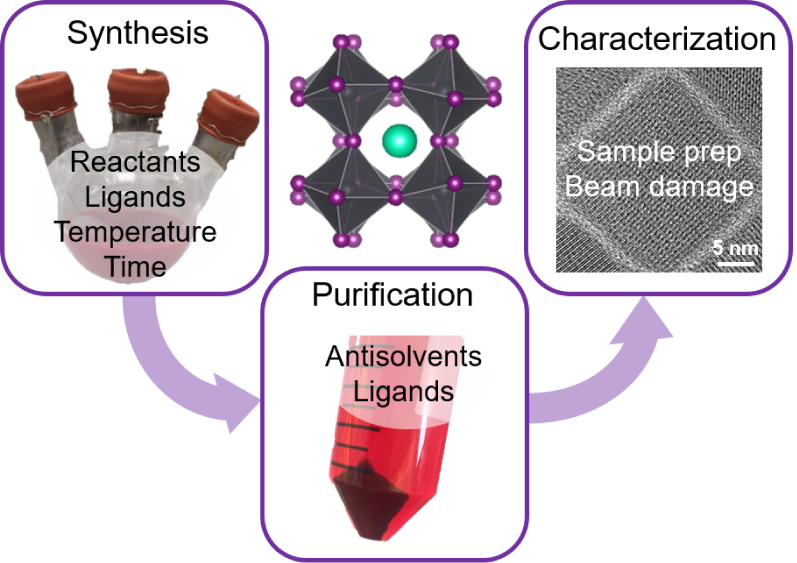

RECENT NEWS
10.11.2023 - The Center for a Solar Powered Future by 2050 had a successful meeting in Fort Collins, CO! 11 Projects were funded thanks to the NSF and industrial partners.
10.06.2023 - Welcome to our newest graduate students: Charles Umashankar Egharevba and Loc Ngo! We are excited to have you join the group!
05.24.2023 - Congradulations to our Sophia Shi for being awarded the UT Chevron Energy Graduate Fellowship outstanding graduate students working on energy systems research. Read more here
12.02.2022 - Congradulations to Dr. Michael Abney for completing their PhD dissertation Photoluminescence and stability of perovskite-phase CsPbI3 nanocrystals and development of nickel metal-organic decomposition inks
10.01.2022 - We are pleased to welcome Christina Al Tawil, Kevin Cover, Allison Segapeli, Sophia Shi, and Ciara Noelle Smith as the newest members of the Korgel Group!
RESEARCH HIGHLIGHT
A "Tips and Tricks" Practical Guide to the Synthesis of Metal Halide Perovskite Nanocrystals
Metal halide perovskite nanocrystals offer a range of interesting properties and are being studied extensively for applications in solar cells, photodetectors and light-emitting devices. In a recent perspectives paper, Yangning Zhang, Timothy Siegler, Cherrelle Thomas, Michael Abney, Tushti Shah, Anastacia De Gorostiza, and Randalynn Greene provide a number of best practices for the synthesis, purification and characterization of metal halide perovskite nanocrystals, with detailed discussion of CsPbI3, CsPbBr3, CH3NH3PbI3 (MAPI), and Cs2AgBiBr6 as examples. This Perspective helps explain and resolve some of the known troubles when working with metal halide perovskite nanocrystals, and hopefully will provide helpful guidance, especially for researchers relatively new to the field. It was one of the most downloaded papers published in Chemistry of Materials in 2020! Find the paper and watch the ACS LiveSlides presentation here.


{kind=link}